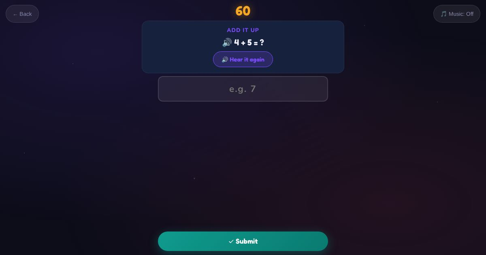

For teachers and tutors
About Add It Up
Simple addition, asked in English. The sum is spoken ("What is four plus three?") and shown on screen. The maths is easy on purpose: the aim is understanding numbers and "plus" in English.

How to play
- Listen to the sum.
- Add the numbers.
- Type the answer.
Play it as a class
Choose Add It Up in the Teacher Game.